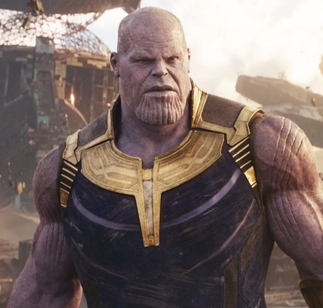

Sobre o IronMan
Sua história é marcada por altos e baixos, desde os primeiros anos de excessos e egoísmo até a profunda transformação em um líder altruísta. Ao longo do tempo, Tony Stark aprendeu a usar sua genialidade para mais do que apenas ganho pessoal, dedicando-se a causas maiores, como a proteção de civis e a preservação da paz mundial. Seu compromisso com a inovação não se limita apenas a novas tecnologias, mas também à melhoria das condições humanas, enfrentando questões éticas e morais enquanto busca um futuro mais seguro e sustentável. Sua coragem diante do perigo, combinada com sua vulnerabilidade humana, torna Stark um dos heróis mais complexos e admirados da história dos quadrinhos e do cinema, um verdadeiro ícone da superação e do impacto positivo através da ciência e da tecnologia.
Aliados
Capitão América
A relação entre Tony Stark e Steve Rogers é marcada por uma mistura de respeito mútuo e conflitos ideológicos. Enquanto Tony representa a inovação e a flexibilidade moral, Steve personifica os valores tradicionais e a rigidez ética. Essa diferença de visões culminou no embate conhecido como "Guerra Civil", onde discordaram sobre o registro de super-heróis. Apesar dos desentendimentos, ambos compartilham um profundo respeito um pelo outro e, em momentos cruciais, unem forças pelo bem maior.
Nick Fury
Tony Stark e Nick Fury têm uma relação de parceria estratégica, embora nem sempre harmoniosa. Fury, como diretor da S.H.I.E.L.D., reconhece o gênio de Tony e frequentemente recorre a ele para soluções tecnológicas e missões críticas. No entanto, Fury também desconfia da natureza impulsiva e rebelde de Stark, o que gera atritos. Ainda assim, os dois mantêm um entendimento tácito de que, no fim, estão do mesmo lado na luta pela segurança global.
Homem Aranha

A dinâmica entre Tony Stark e Peter Parker é quase paternal. Tony vê em Peter um potencial extraordinário e assume o papel de mentor, fornecendo ao jovem herói tecnologia e orientação. Ele se preocupa genuinamente com o bem-estar de Peter, muitas vezes tentando protegê-lo de perigos maiores. Por outro lado, Peter enxerga Tony como uma figura de admiração e inspiração, buscando provar seu valor ao lado do Homem de Ferro. Essa relação é repleta de momentos de aprendizado, desafios e um vínculo emocional significativo.
Vilões
Loki

A relação entre Tony Stark e Steve Rogers é marcada por uma mistura de respeito mútuo e conflitos ideológicos. Enquanto Tony representa a inovação e a flexibilidade moral, Steve personifica os valores tradicionais e a rigidez ética. Essa diferença de visões culminou no embate conhecido como "Guerra Civil", onde discordaram sobre o registro de super-heróis. Apesar dos desentendimentos, ambos compartilham um profundo respeito um pelo outro e, em momentos cruciais, unem forças pelo bem maior.
Ultron
Tony Stark e Nick Fury têm uma relação de parceria estratégica, embora nem sempre harmoniosa. Fury, como diretor da S.H.I.E.L.D., reconhece o gênio de Tony e frequentemente recorre a ele para soluções tecnológicas e missões críticas. No entanto, Fury também desconfia da natureza impulsiva e rebelde de Stark, o que gera atritos. Ainda assim, os dois mantêm um entendimento tácito de que, no fim, estão do mesmo lado na luta pela segurança global.
Thanos
A dinâmica entre Tony Stark e Peter Parker é quase paternal. Tony vê em Peter um potencial extraordinário e assume o papel de mentor, fornecendo ao jovem herói tecnologia e orientação. Ele se preocupa genuinamente com o bem-estar de Peter, muitas vezes tentando protegê-lo de perigos maiores. Por outro lado, Peter enxerga Tony como uma figura de admiração e inspiração, buscando provar seu valor ao lado do Homem de Ferro. Essa relação é repleta de momentos de aprendizado, desafios e um vínculo emocional significativo.